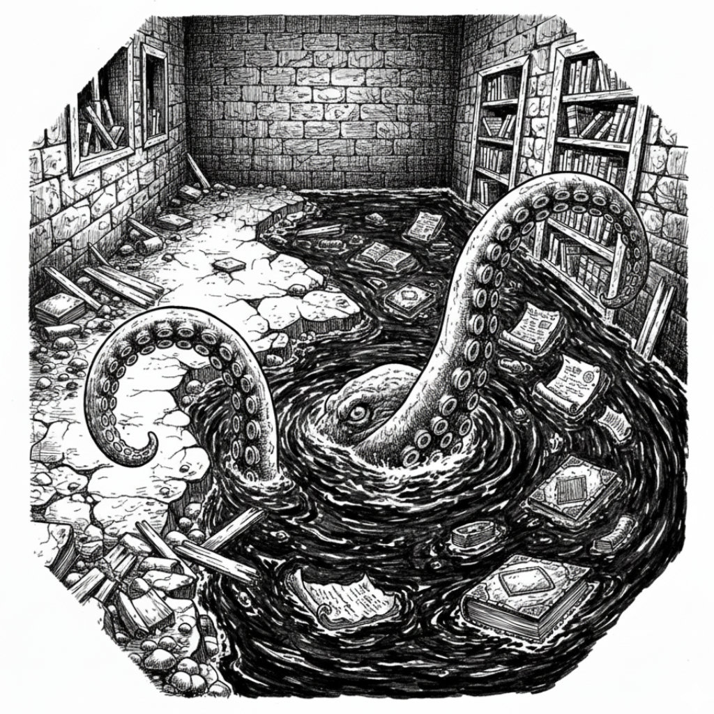

The dead man’s final words hang in the air like frost: The gods must pay for Aeor’s destruction. It is a sentiment so vast, so blasphemous, it almost eclipses the immediate squalor of Ferol Sal’s vault—a place of grand, genocidal ambitions and petty, homicidal housewares. Exhausted, bloodied, and with nerves frayed to raw threads, the party retreats to the impossible warmth of the elemental’s cavern. There, the low hum of the caged giant becomes a welcome lullaby as they finally take their rest, a pocket of life carved out of a world of ice and death.
When they return, the ruin seems to have sunk even further, as if weary of its own long vigil. The silence within is deeper, more expectant. They have scoured much of this place, but the cure remains a ghost. Three doors remain in the long, zombie-stained corridor.
“Right then,” Halite says, his voice a low rumble that barely disturbs the quiet. “Nothing to do but keep looking.”
They return to the kitchen, the scene of their recent, chaotic ballet with cutlery. Now that all is calm again, they notice a door opposite the magic oven.
“I’ll take this one,” Doctor Pepe says, his voice betraying a confidence he might not entirely feel. He gestures for quiet, for space. “Stealthily, this time.”
“Just try not to get eaten by the furniture,” Gerhard mutters from the back.
Doctor Pepe ignores him, pressing his ear to the cold stone door. He runs his gloved fingers along the seams, feeling for the slightest incongruity that might betray a wire or a pressure plate. He examines the floor beneath, the hinges, the handle itself, his touch feather-light. He is all focus, a surgeon of secrets.
And then Whisper, shifting her weight, knocks her water-skin against her quarterstaff with a dull bop that echoes like a drumbeat in the tomb’s silence.
“Gods take you, cat!” Kragor hisses. “Why is it always the stealthy one who stubs her toe?”
“I am a natural soloist,” Whisper retorts, unruffled. “Bringing all of you along is the problem.”
Doctor Pepe flinches at the noise but continues his work. He gives a soft grunt of satisfaction. “Not trapped. And it’s not locked.” He steps back, glances at the others, and pulls.
The door swings open on a dining hall, choked with the dust of ages. Piles of rubble litter the floor. And sitting at the remains of shattered tables are six figures in familiar red robes, their heads bowed as if in prayer. For a silent, hopeful second, they are just bodies. Then, as one, they lift their heads, and the dead, milky eyes of zombies fix upon the living.
“Oh, for the love of…” Kragor groans.
The room erupts in a storm of decaying fists and groans. Elara doesn’t hesitate, rushing past Halite into the doorway. “Fae ignis!” she sings, strumming a sharp, dissonant chord on her harp. A wave of violet light washes over the room, bathing three of the shambling figures in an eerie glow, their rot suddenly, sickeningly vivid.
“Light ‘em up, I’ll knock ‘em down!” Gerhard yells. His arrow and a bolt of crackling shadow from Kragor converge on the nearest glowing corpse, blowing it apart in a spray of dust and dried viscera.
Doctor Pepe sees his opening. A flash of dagger, a thrust of shortsword into the zombie, and he’s gone, melting back into the relative safety of the kitchen. “That’s how you fight like a rogue!” he pants.
His tactics, however, only serve to draw the enemy out. One lurches after him, a clumsy fist grazing his ribs. Another swings at Elara, who twirls away from the blow. The doorway becomes a choke point of grasping hands and snapping teeth. A heavy fist hits Whisper with sickening force, and the tabaxi grunts, staggering. Halite’s shield rings like a funeral bell as he holds the line, his trident punching deep into a fourth attacker.
“Zombie hurt me,” Whisper growls, her voice low and dangerous.
Scarlet hurls a gout of flame at Doctor Pepe’s pursuer as Whisper, though wounded, slashes at her own attacker before flowing back into the hall. The tide turns. Elara’s twin daggers find the heart of the zombie Doctor Pepe had wounded, and it collapses. Gerhard’s next arrow fells the one Scarlet scorched. “And stay down!” he shouts.
It becomes a brutal disassembly line. Kragor blasts the creature menacing Halite into greasy chunks. Doctor Pepe leans out and puts a bolt through the eye of Whisper’s attacker.
Only one remains. It ignores the others, charging Kragor. Halite’s trident rips through its torso, tearing away half its body. Incredibly, it keeps coming, a lurching, one-armed nightmare. While Scarlet’s magic knits Whisper’s wounds, the monk leaps back in, a flurry of fists and feet. The zombie falls. It gets back up. She pummels it again. It rises once more.
“Stubborn bastard,” Elara mutters, nocking an arrow. Her shot finds its mark. The thing falls a final time and is still.
The silence that follows is heavy with the smell of dust and old death. Searching the dining hall, they find nothing of use. They exit through a door into the hallway. Gerhard glances up and down the length of it. “Just two doors left,” he observes. Doctor Pepe, with a weary sigh, steps forward once more, towards the nearest door. He waves off any checks for traps or locks and just opens it.
Beyond is a ruined library. Water ebbs and flows through a large opening in the far wall, turning the floor into a shallow, debris-strewn pool. Rotting parchments and waterlogged tomes float like lily pads. Dim, arcane light glows from sconces on the one remaining wall, casting long, dancing shadows on the water.
“Hear that?” Doctor Pepe whispers. “Running water.” He takes a cautious step into the room.
The water does not so much splash as it heaves, exploding upwards. A slick, purpled tentacle, thick as a man’s thigh and knobbed with pulsing suckers, whips through the air with a sound like a wet bullwhip. It cracks against the stone just beside Doctor Pepe’s head.

“By the Abyss! Big octopus!” Kragor bellows, a sickly chartreuse light already gathering around his hands. “Te exsecro!” he snarls, and the shimmering curse sinks into the dark shape moving beneath the water. He points a crooked finger. “Dolor!” A bolt of greasy, void-black energy lances into the pool, striking something vast and yielding with a sodden whump.
“Maybe it wants to parley?” Scarlet asks, her voice thin with desperate hope.
“It’s a little past words, I think!” Gerhard yells back. He nocks an arrow, but it skips harmlessly off the churning water.
The second lash is too fast to follow. It hits the rogue like a battering ram, a wet, meaty slap that cracks against his ribs. The air leaves him in a single, desperate gasp before the coil tightens, lifts him from his feet, and vanishes with him beneath the black water.
“Doctor Pepe!” Halite’s voice is a raw-throated bellow of fury. The beast surfaces, a nightmare of bulging mantle and intelligent, malevolent eyes, its great, horny beak snapping at Kragor. The orc clumsily dodges just in time, almost losing his balance.
Whisper is a blur of motion. She darts into the room, landing a single blow to the creature’s mantle before using its own momentum to shove it back into the deeper water. Halite charges past her, hurling a trident that sinks deep into the monster’s flank. He draws another and, with a roar of pure rage, throws it as well. It strikes true.
Elara is there beside him, adding her own arrow to the pincushion of shafts now sprouting from the beast.
Suddenly, Gerhard twists the opal on his finger. “Try the floor!” he yells, and then he sprints across the water, his boots pounding the surface with impossible, solid thuds.
Scarlet doesn’t hesitate. She runs across the top of the water to where she last saw Doctor Pepe. She speaks a word, and the shimmering magic around her feet dies. She plunges into the glacial water, the shock a physical blow. Below, in the green-black gloom, she sees the octopus, its coils wrapped tight around Doctor Pepe’s still form. She swims to him, lays her hands upon his chest, and a desperate pulse of healing light flows from her palms.
Doctor Pepe’s eyes fly open. He is underwater. He is drowning. He is alive.
His revival enrages the beast. A tentacle whips out, ensnaring Scarlet, holding her fast. Its beak finds Doctor Pepe, biting deep into his shoulder. It begins to pull away, dragging its two captives toward the breach in the wall.
“Oh no you don’t!” Whisper is already moving, her feet slapping against the solid-seeming water. She dives, her claws flashing.
Halite is right behind her, a titan running on water. He reaches the beast, raises his last trident, a three-pointed specter against the arcane light. He doesn’t throw it. He leaps, driving it down with all his weight and rage behind it. The weapon punches through the creature’s mantle with a sickening crunch. The octopus convulses, vomiting a great cloud of black, sulfurous ink, and then it is still. Its tentacles go limp.
They drag themselves and their dead foe to the relative dryness of the library floor, gasping, shivering, and stinking of the abyss.
“Sulfurous,” Scarlet chokes out, prodding the corpse. “Definitely can’t eat it.”
Doctor Pepe drags himself to a wall and slides down it, the fight leeched out of him. A profound weariness, deeper than any simple fatigue, settles into his marrow. His vision tunnels, the world’s edges blurring into gray.
It is just then that Elara hears a voice in her head, faint and familiar. Tulgi has passed away. It is The Buyer.
Her face hardens. She thinks her response, focusing her will. Our condolences. We are in Salsvault. Seeking the solution.
She waits, but there is no reply. “A Sending spell just informed me: Tulgi Lutan has succumbed to the Frigid Woe. We’re running out of time,” she tells the others. No one speaks. The declaration hangs heavily in the air.
After several heartbeats, Gerhard shrugs. “We should continue our search.”
As the others search the ruined library, Whisper spots a scroll case bobbing near the far wall. She retrieves it. Inside are two scrolls. “Kragor… what do you make of these?”
“Detect Magic,” Kragor announces, looking them over. “I have no need of these… but Elara, Scarlet… you may find them handy. Take one each.”
There is one door left in the hall. One last loose end before they can rest. Whisper approaches it, her movements now filled with a weary deliberation. She finds no traps, no lock.
“Right,” Halite grunts. “Let’s get this over with.” He shoves the door open.
Four more zombies in a trashed dormitory.
Whisper sighs. The party moves with the grim efficiency of butchers on a killing floor. There is no surprise, no fear, only a job to be done. Whisper is a flurry of blows, pushing one back, staggering another. The zombies shamble forward. Most of their punches miss wildly, but one exceptionally agile one weaves through the crowd and strikes Whisper. Seeing this, Elara draws and shoots, but only manages to put an arrow in its calf. Gerhard downs it with a perfectly placed shot through the eye. Halite’s trident skewers another. Kragor, moving in with his hammer, smashes a third with a blast of radiant light, ensuring it won’t get back up.
The last two fall in a hail of arrows, fists, and steel. The fight is over in seconds. The hallway is finally, truly clear.
They search the dormitory, but it is as fruitless as the dining hall. Overturned cots, ransacked footlockers, the meager possessions of long-dead acolytes scattered like chaff. Gerhard kicks at a splintered chest, spilling moth-eaten woolens and a single, sad-looking sock across the grimy floor.
“More nothing,” he announces to the silent room. “Not a copper piece, not a clue, not even a decent water-skin. Just more dead men in robes.”
Doctor Pepe leans heavily against the door frame, the unnatural weariness a leaden cloak upon his shoulders. “My bones ache. I’m spent.”
“He’s right,” Halite says, his voice a low rumble. “Scarlet and Whisper are beyond bloodied as well. Ferol Sal’s grand design can wait until morning. They need rest.”
“The hot spring sounds better than any feather bed right now,” Whisper agrees, her tail giving a single, tired flick.
“Agreed,” Kragor says, resting his war hammer on his shoulder. “Let’s not find out what other surprises this place has for us in this condition.”
The decision is unanimous. With one last look down the cleared, silent hall, they turn their backs on the tomb. Back through the sinking ruin, out into the biting wind, and to the sanctuary of the elemental’s cavern. The warmth is a blessing, a stolen moment of peace.
That night, Kragor dreams. He is not an orc. He is human, his hands slender, with snaking black veins pulsing just beneath the skin. He is with a tribe of humans and halflings, struggling through a blizzard of impossible force. A god’s voice booms in his mind, urging them onward. A block of ice the size of a horse hurtles out of the white chaos, wiping out two of his companions. He sees towering figures in the distance, then another boulder of ice is hurtling toward him—and he wakes with a gasp, the phantom impact still echoing in his bones.
Outside, a real blizzard now howls, reducing visibility to zero.
“We can’t just sit here,” Elara says, her voice taut with urgency. She is the first one fully awake, staring out at the screaming white void that has replaced the world. “Tulgi is dead. How many more will follow while we wait for the weather to turn?”
Gerhard squints into the maelstrom. “And how many of us will follow Tulgi if we step out into that? You can’t see your own hand. We’d be lost and frozen statues in ten minutes.”
“The ranger is right,” Halite says, his tone leaving no room for argument. “Salsvault has waited for centuries. It can wait one more day. We’re no good to anyone as ice cubes.”
So they wait. The day bleeds away into a long, howling night, the hours marked only by the shifting of restless sleepers and the elemental’s ceaseless, gentle hum.
Morning comes, not with light, but with a profound and muffled silence. The blizzard is gone. In its place, a solid wall of white seals the mouth of their cave.
“Right, then,” Halite grunts, grabbing a shield to use as a makeshift shovel. “Kragor, with me.”
Halite and Kragor spend the better part of an hour digging a tunnel out into a world blanketed in fresh, deep powder. They carve a path through the drift, a two-man engine of grunting, scraping determination. They break through into a world born anew in white. The sun is a merciless glare, the air colder than ever, a physical presence that bites at any exposed skin.
The trek back to Salsvault is exhausting. Every step is a plunge into thigh-deep snow, a battle against a landscape that wants to swallow them whole. The quick dash of yesterday becomes a two-hour ordeal of high-stepping, panting, and cursing the gods of winter. Finally, they stand again in its silent halls.
“Ready for more surprises?” Gerhard asks, his voice flat. “Let’s head south of the entrance.”
Doctor Pepe leads the way, looking back over his shoulder at the rest of the party. “That’s back through this room where we know Urgon and Orvo found the Frigid Woe, right?” Somewhat distracted, he walks straight into a door with a dull thud. It swings open.
Beyond is a forge. A great, cold anvil and furnace dominate the room, which is otherwise filled with armor stands and rubble.
Whisper notices something strange across from the furnace. “What’s this?” she purrs. She crosses the room to examine a pile of debris—out of which protrude two booted feet. As she takes a closer look, they twitch!
She picks up a scrap-iron rod from the litter. She cautiously pokes the boots with it. They twitch again, but no other response.
“Leave that alone!” Gerhard barks. Whisper gives him a sly smile and tosses aside the rod. “Perhaps it is bait… a trap…”
“More like just an unlucky zombie,” Kragor answers. “Who knows how many years it has been stuck under this rubble. In any case, it poses no threat.” Gerhard grumbles assent.
Kragor then kneels, his eyes closed, whispering the incantation to see the world of magic. “Nothing in here,” he reports. He looks toward the door on the far side of the forge. “But through there… I sense several points of power. Transmutation, Evocation… and that other kind. The kind I can’t place.”
“Let’s not just throw it open this time,” Elara suggests. She raises a hand, and a perfect, shimmering illusion of the door appears just before the real one. “Kragor, if you would?”
Kragor looks confused for a moment, then it clicks. “Ah, clever plan.” The warlock summons his spectral hand. It drifts through the illusion, then grasps the handle of the real door, and pulls it open.
Whisper peers carefully through Elara’s illusory door. She sees a long hallway with four more doors. And from somewhere down that hall, she hears a sound: a heavy and sporadic thumping.
Thump.
Thump.
Thump.